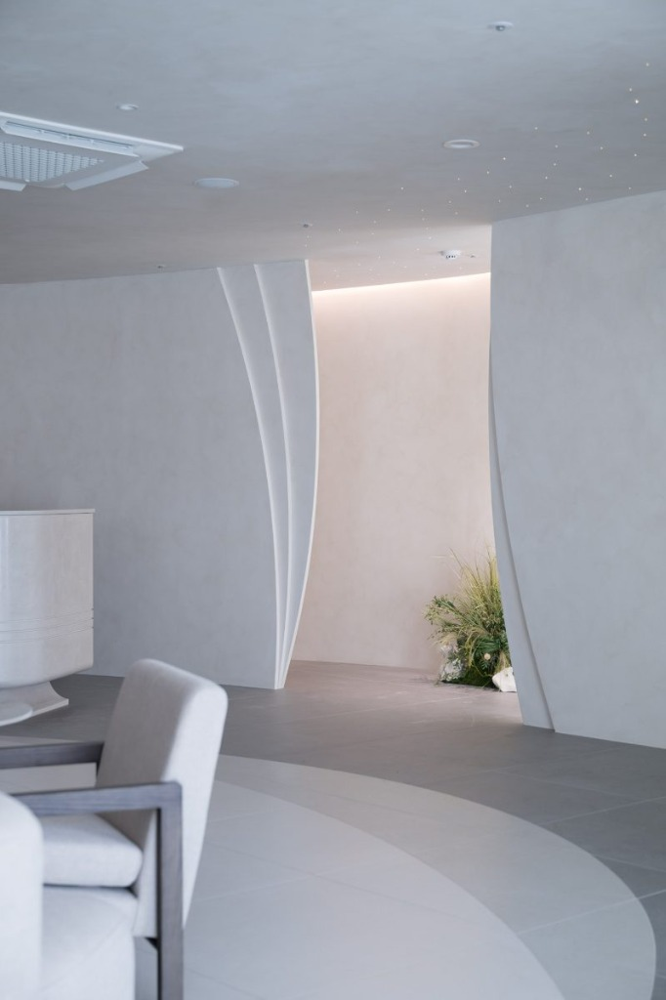
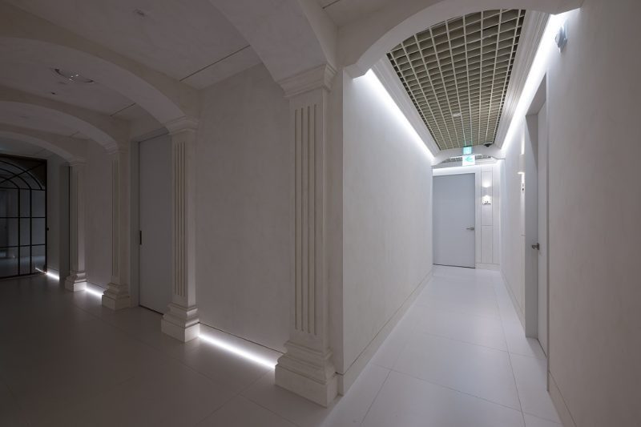
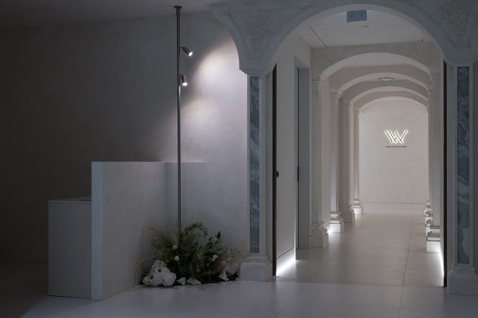
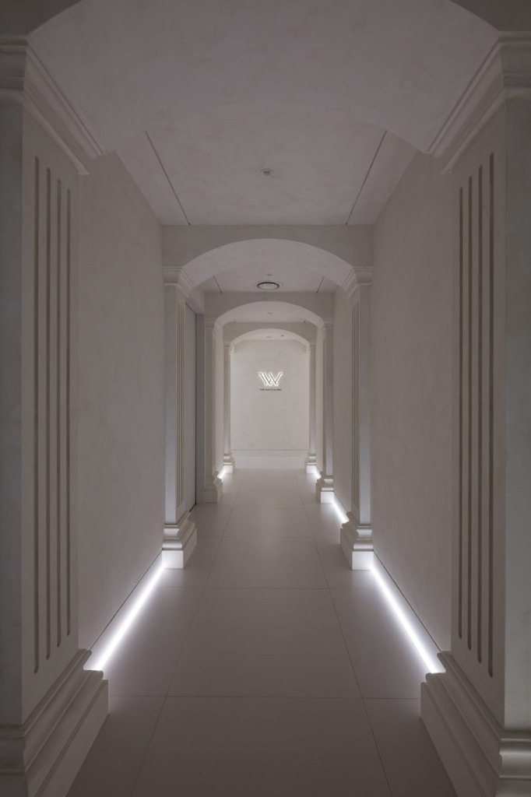

오이코스 페인트와 곡선 라인이 만든 피부과 라운지 인테리어
스투코 텍스처와 유기적 곡선 레이어로 연출하는 피부과 인테리어
[서론] 시각적 안착감을 선사하는 피부과 라운지 기획
피부과의 첫인상을 결정하는 라운지와 복도는 이용자가 진료를 기다리며 마음의 안정을 얻는 중요한 휴식 공간입니다. 차갑고 각진 전형적인 병원 인테리어에서 벗어나, 유기적인 곡선 파티션과 은은한 질감의 마감재를 결합하여 갤러리 같은 차분함을 완성하는 디자인 접근이 주목받고 있습니다.
이번 큐레이팅에서는 이탈리아 스페셜 도장인 오이코스(Oikos) 페인트의 스투코 질감과 클래식 아치 게이트, 그리고 바이오필릭 조경 디테일이 어우러진 피부과 공간을 4가지 시선으로 다뤄보겠습니다.
01. 곡선 파티션과 천장 은하수 조명이 만드는 유기적 라운지

라운지 입구는 각진 형태 대신 겹겹이 중첩되는 유기적 곡선 파티션을 배치하여 공간에 부드러운 깊이감을 더했습니다.
- • 빛을 머금는 표면: 오이코스 스페셜 도장의 미세 입자가 조명을 받아 자연스러운 웜그레이지 음영을 형성합니다.
- • 은하수 핀조명 효과: 천장 면에 광섬유 타입의 미세 핀조명을 수놓듯 배치하여 밤하늘 아래 머무는 듯한 아늑함을 전달합니다.
- • 자연 요소의 매치: 파티션 사이로 들여다보이는 조경 공간이 시각적 청량감을 부여합니다.
02. 클래식 아치 기둥과 은폐형 격자 천장의 구조적 대비

동선이 분판되는 복도 구역은 고전적 아치 비율과 현대적인 천장 조명 기법을 세련되게 대조시켰습니다.
- • 수직 루버 몰딩: 기둥 전면에 일정한 음각 루버 라인을 새겨 층고가 높고 정돈되어 보이는 효과를 유도합니다.
- • 천장 격자 그리드: 상부 천장에 음폐형 격자(Grid) 구조와 라인 간접 조명을 매립하여, 복도가 어둡지 않도록 부드러운 분산 광원을 확보했습니다.
03. 바이오필릭 조경과 스폿 조도가 완성하는 웰컴 포인트

카운터 옆 빈 공간에는 돌과 이끼, 식재를 활용한 바이오필릭(Biophilic) 조경 코너를 조성하여 자연의 질감을 실내로 들였습니다.
- • 수직 얇은 픽쳐 라이트: 슬림한 세로 기둥형 스폿 조명을 설치하여 조경 오브제만을 집중 조명합니다.
- • 질감의 레이어링: 무광 수조 형태의 안내 데스크와 오이코스 벽면, 그리고 이끼 텍스처가 겹쳐지며 깊은 시각적 감도를 완성합니다.
04. 대칭적 깊이감을 연출하는 하부 매립 라인 조명

복도 정중앙에서 바라본 시선은 대칭적 비율이 주는 극진한 정갈함을 보여줍니다.